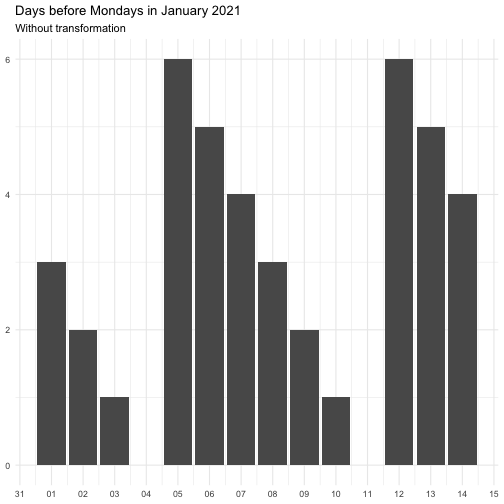
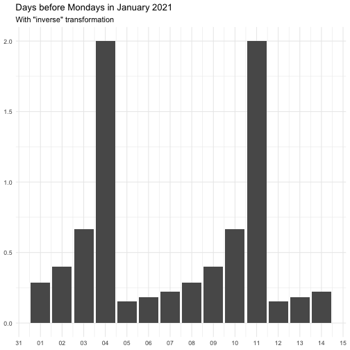
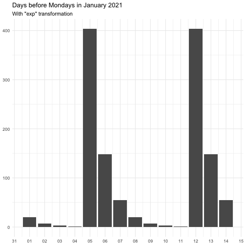
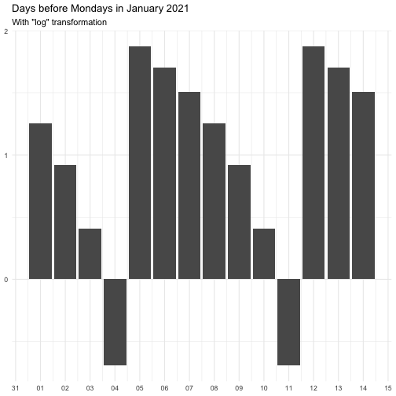

step_date_before creates a specification of a recipe
step that will create new columns indicating the time before an
recurrent event.
Arguments
- recipe
A recipe object. The step will be added to the sequence of operations for this recipe.
- ...
One or more selector functions to choose variables for this step. See
selections()for more details.- role
Not used by this step since no new variables are created.
- trained
A logical to indicate if the quantities for preprocessing have been estimated.
- rules
Named list of
almanacrules.- transform
A function or character indication a function used oon the resulting variables. See details for allowed names and their functions.
- columns
A character string of variables that will be used as inputs. This field is a placeholder and will be populated once
prep.recipe()is used.- skip
A logical. Should the step be skipped when the recipe is baked by
bake.recipe()? While all operations are baked whenprep.recipe()is run, some operations may not be able to be conducted on new data (e.g. processing the outcome variable(s)). Care should be taken when usingskip = TRUEas it may affect the computations for subsequent operations.- id
A character string that is unique to this step to identify it.
Value
An updated version of recipe with the new check added to the
sequence of any existing operations.
Details
The transform argument can be function that takes a numeric vector and
returns a numeric vector of the same length. It can also be a character
vector, below is the supported vector names. Some functions come with offset
to avoid Inf.
"identity"
function(x) x
"inverse"
function(x) 1 / (x + 0.5)
"exp"
function(x) exp(x)
"log"
function(x) log(x + 0.5)The effect of transform is illustrated below.

The naming of the resulting variables will be on the form
{variable name}_before_{name of rule}
Examples
library(recipes)
library(extrasteps)
library(almanac)
library(modeldata)
data(Chicago)
on_easter <- yearly() %>% recur_on_easter()
on_weekend <- weekly() %>% recur_on_weekends()
rules <- list(easter = on_easter, weekend = on_weekend)
rec_spec <- recipe(ridership ~ date, data = Chicago) %>%
step_date_before(date, rules = rules)
rec_spec_preped <- prep(rec_spec)
bake(rec_spec_preped, new_data = NULL)
#> # A tibble: 5,698 × 3
#> ridership date_before_easter date_before_weekend
#> <dbl> <dbl> <dbl>
#> 1 15.7 83 5
#> 2 15.8 82 4
#> 3 15.9 81 3
#> 4 15.9 80 2
#> 5 15.4 79 1
#> 6 2.42 78 0
#> 7 1.47 77 0
#> 8 15.5 76 5
#> 9 15.9 75 4
#> 10 15.9 74 3
#> # … with 5,688 more rows